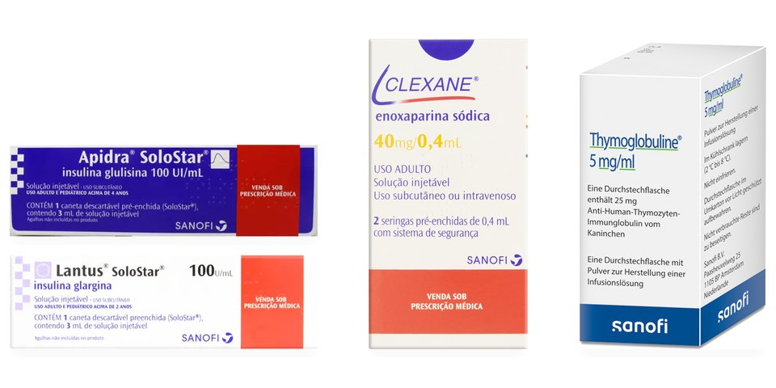
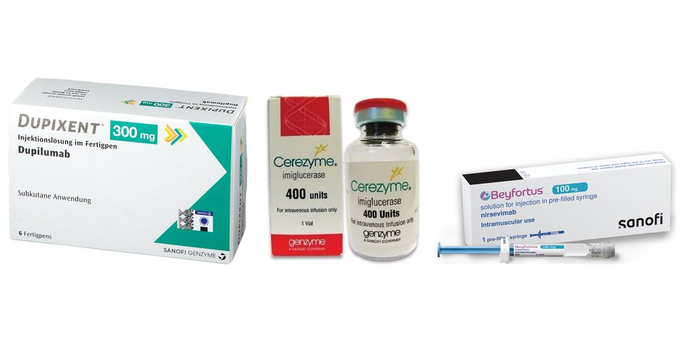

Sanofi
Jan 2026 to Oct 2026
Demand Planning Analyst, IBP
- Power BI dashboards for ODR/SLOB, supply risks and forecast accuracy by family and BU, used in IBP forums.
- Tracking of MAPE, Bias and FVA at Lag 1 and Lag 3, comparing statistical and commercial forecasts.
- Forecast qualification model (Syntetos-Boylan, 8 criteria) in Power BI and Power Pivot.
- Data reconciliation across SAP, Kinaxis, Snowflake, TM1, SQL Server and SharePoint.
- LATAM hub onboarding: a bank of more than 135 questions across 6 modules.
Main brands covered by my demand planning, grouped by business unit (BU).

Established Products BUInjectables: Lantus, Apidra, Clexane, Thymoglobuline Established Products BUTablets: Lasix, Clorana, Puran T4, Stilnox
Specialty Care and Vaccines BUsSpecialty Care: Dupixent, Cerezyme. Vaccines: BeyfortusPacks and trademarks belong to Sanofi. Illustrative images.